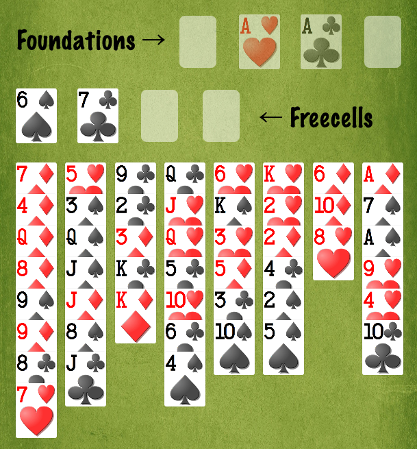

FreeCell is a card solitaire game, usually played on a computer. All cards are exposed at the start, and most deals are winnable; thus, FreeCell is more like a puzzle than a traditional solitaire.
The layout is in three parts: the Foundations, the Freecells, and the Tableau (Columns).

Cards run from Ace (low) up to King (high).
All cards are initially dealt face up into the Tableau, exhausting the deck.
There are four Foundations, one for each suit. Cards must be played in order, from Ace to King, onto each Foundation:
An Ace may be played onto an empty Foundation.
Any other card may be played to a Foundation only onto the next lower card of the same suit.
You win the game when each Foundation consists of Ace up to King in order in its suit.